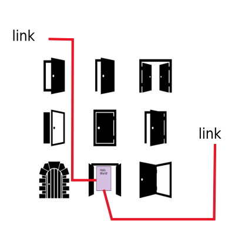
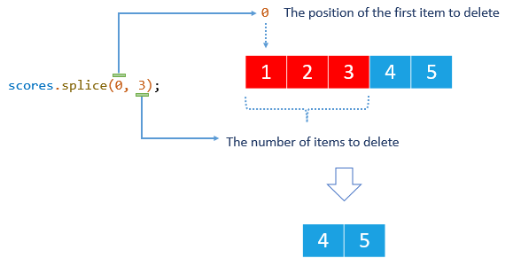
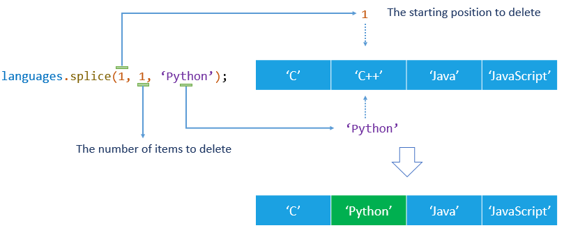

Moduł2 - Zajęcia 3 - Tablice
Section1: Tablice(arrays)
Array - struktura danych do przechowywania i manipulowania
indeksowanych zbiorem wartości. Służy do przechowywania i pracowania
nad kolekcjami, uporządkowanymi według kolejności, danych, takich jak
lista hoteli, towarów, klientów hoteli itp.
Tworzenie
Array (tablicę) najprościej zadeklarujemy otwierając i zamykając
kwadratowy nawias [] - inaczej mówimy o tym zapisie jako o literale
tablicowym (array literal). Wewnątrz nawiasów poszczególne elementy
oddzielamy przecinkiem.
const clients = ["Mango", "Poly", "Ajax"];
Dostęp do elementów
Aby uzyskać dostęp do wartości danego elementu tablicy
wykorzystujemy składnię nawiasów kwadratowych w postaci
array[index], gdzie array to nasza zmienna/tablica a index to indeks
elementu którego wartość chcemy uzyskać. Pomiędzy nazwą zmiennej
która przechowuje tablicę a nawiasami nie powinno być spacji.
const clients = ["Mango", "Poly", "Ajax"];
// Podając indeks elementu w nawiasie kwadratowym, otrzymujemy jego wartość
console.log(clients[0]);// Mango
console.log(clients[1]);// Poly
console.log(clients[2]);// Ajax
Indeksowanie elementów tablicy zaczyna się od zera, tak samo
indeksowanie znaków w stringu.
Zmiana elementów
W przeciwieństwie do znaków wiersza, elementy tablicy możemy
zmieniać nie "przepisując" całej zmiennej. Możemy odwołać się do
nich za pomocą indeksu i następnie przypisać nową wartość, nawet
jeżeli zmienna jest zadeklarowana przy pomocy słowa kluczowego
const.
const clients = ["Mango", "Poly", "Ajax"];
clients[0] = "Kiwi";
clients[1] = "Pango";
console.log(clients);// ["Kiwi", "Pango", "Ajax"]
Długość tablicy
Długość lub rozmiar tablicy to inaczej liczba elementów, z których
się składa. Dostępna jest we właściwości length. Rozmiar jest
dynamiczny i zmienia się automatycznie przy dodaniu lub usunięciu
elementów.
const clients = ["Mango", "Poly", "Ajax"];
console.log(clients.length);// 3
Index ostatniego elementu
Najczęściej nie wiemy z góry, jaka będzie długość tablicy. Aby
otrzymać wartość ostatniego elementu stosujemy następujące podejście
- długość tablicy jest zawsze +1 większa niż indeks ostatniego
elementu (ponieważ indeksy liczymy od zera). Za pomocą formuły
array.length - 1 możemy otrzymać indeks, przy pomocy którego
otrzymamy wartość ostatniego elementu tablicy dowolnej długości (nie
znając jej z góry).
const clients = ["Mango", "Poly", "Ajax"];
const lastElementIndex = clients.length - 1;
console.log(lastElementIndex); // 2
console.log(clients[lastElementIndex]); // "Ajax"
Section2: Iteracje w arrays
Pętlę for można wykorzystywać do iteracji po elementach tablicy, a
następnie dla każdego z nich możemy wykonać dowolne instrukcje.
const clients = ["Mango", "Ajax", "Poly"];
for (let i = 0; i < clients.length; i += 1) {
console.log(clients[i]);
}
Dostęp do elementów uzyskuje się ponownie za pomocą składni nawiasów
kwadratowych array[index], gdzie index to wartość licznika pętli od
0 do ostatniego indeksu tablicy.
Cykl for...of
Konstrukcja for...of służy do stworzenia pętli, iterującej po
wszystkich elementach kolekcji takich jak tablice czy wiersze. Ciało
cyklu będzie wykonywać się dla wartości każdego elementu. Jest to
dobry sposób na zastąpienie cyklu for jeśli nie potrzebujemy znać
indeksu elementu dla którego wykonuje się dany obrót pętli.
for (const variable of iterable) {
// ciało pętli
}
-
variable — zmienna, która będzie zawierać wartość kolejnych
elementów w każdej z iteracji.
-
iterable — zmienna np. typu array, która zawiera elementy i po
której możemy "iterować"
const clients = ["Mango", "Ajax", "Poly"];
for (const client of clients) {
console.log(client);
}
const string = "javascript";
for (const character of string) {
console.log(character);
}
Instrukcje break i continue
W poniższym przykładzie odnajdźmy imię klienta w tablicy, jeśli je
znajdziemy - przerywamy pętlę, ponieważ nie ma sensu szukać dalej
(zakładamy unikalność imion w tablicy lub potrzebujemy jedynie
informację o tym, czy klient o danym imieniu znajduje się w danej
tablicy)
const clients = ["Mango", "Poly", "Ajax"];
const clientNameToFind = "Poly";
let message;
for (const client of clients) {
// W każdej iteracji sprawdzamy, czy dany element tablicy jest identyczny
// do imienia którego szukamy.
// Jeśli tak, zapisujemy w message wiadomość o sukcesie
// a następnie użyjemy instrukcji break, aby przerwać dalsze poszukiwanie
if (client === clientNameToFind) {
message = "Klient z takim imieniem jest w bazie danych!";
break;
}
// Jeśli nie znajdziemy takiego klienta,
// zapisujemy do message wiadomość o braku dopasowania.
message = "Nie znaleźliśmy takiego klienta w bazie danych!";
}
console.log(message); // "Klient z takim imieniem jest w bazie danych!"
Dla optymalizacji powyższego przykładu, możemy najpierw ustawić
message na wartość dla błędu wyszukiwania, a w pętli nadpisać go
tylko jeśli nazwa zostanie znaleziona. Przypisanie nowej wartości do
zmiennej w niemal każdym przypadku to strata zasobów i pamięci
operacyjnej.
Instrukcja break nadal się przyda, hipotetycznie w przypadku tablicy
10 000 klientów, ten którego potrzebujemy, mógłby być na pozycji 2 i
bez użycia break bez powodu zrobilibyśmy 9998 kolejnych obrotów
pętli.
const clients = ["Mango", "Poly", "Ajax"];
const clientNameToFind = "Poly";
let message = "Nie znaleźliśmy takiego klienta w bazie danych!";
for (const client of clients) {
if (client === clientNameToFind) {
message = "Klient z takim imieniem jest w bazie danych!";
break;
}
// Jeśli nie mamy dopasowania, to w tej iteracji nie robimy nic.
}
console.log(message);// Klient z takim imieniem jest w bazie danych!
Użyjmy pętli do pokazania tylko liczb większych od określonej
liczby.
const numbers = [1, 3, 14, 18, 4, 7, 29, 6, 34];
const threshold = 15;
// Dla liczb mniejszych niż threshold wykonana zostanie instrukcja continue,
// dzięki czemu obecny obrót pętli zostaje przerwany
// i przechodzimy do następnej iteracji.
for (let i = 0; i < numbers.length; i += 1) {
if (numbers[i] < threshold) {
continue;
}
console.log(`Liczba większa niż ${threshold}: ${numbers[i]}`);
}
// 'Liczba większa niż 15: 18'
// 'Liczba większa niż 15: 29'
// 'Liczba większa niż 15: 34'
Section3: Przypisanie wartości za pomocą linku lub znaczenia
Podstawowa różnica między typami złożonymi, a prymitywnymi polega na
tym, w jaki sposób są one przechowywane i kopiowane. Prymitywy:
strings, numbers, booleans, null i undefined, jeśli są przypisane do
nowej zmiennej, to zostaną skopiowane w całości, według wartości (by
value).
Nie dotyczy to typów złożonych. W zmiennej, do której przypisano
tablicę lub obiekt, nie jest przechowywana sama wartość, ale adres
jej miejsca w pamięci, innymi słowy - link do niego i są one
przekazywane przez referencję (by reference).
Wyobraźmy sobie zmienną, jako kartkę papieru. Jej wartość
reprezentujemy w formie wpisu na tym arkuszu.
Jeśli chcemy przekazać użytkownikom treść danej kartki, możemy
zrobić to za pomocą utworzenia fizycznej kopii i przekazania jej
wszystkim, czyli utworzyć wiele niezależnych kopii (przypisanie
według wartości).
Innym sposobem będzie umieszczenie obiektu w zamkniętym pokoju i
danie komuś do niego klucza, w ten sposób istnieje jeden egzemplarz
z ogólnym dostępem (przypisanie przez referencję/link).

Zmieńmy teraz dane na kartce papieru - wartość zmiennej. To
oczywiste, że osoby odwiedzające pokój zawsze będą widzieć
wprowadzane zmiany, ponieważ oryginał jest zmieniony, a oni mają do
niego dostęp. Również oczywiste jest, że właściciele kopii
papierowej nie zauważą zmiany patrząc na swoje kopie.
Podczas przypisywania przez wartość zmienne są przydzielane do nowej
lokalizacji w pamięci, do której kopiowane są dane. Analogia z
wieloma kopiami kartki papieru reprezentuje to w prosty sposób,
istnieje osobna kartka dla każdego nowego przypisania.
Podczas przypisywanie przez referencję, zamiast tworzenia nowego
obiektu, przypisywany jest link zmiennej (adres) do już istniejącego
obiektu, czyli do jego miejsca w pamięci. W ten sposób wiele
zmiennych może wskazywać na ten sam obiekt, analogicznie do
zamkniętego pokoju, posiadają one klucz dostępu do oryginalnej
kartki papieru.
Wszystkie typy prymitywne przypisane są przez wartość, czyli
tworzona jest kopia.
let a = 5;
// Przypisanie przez wartość, w pamięci zostanie zarezerwowane miejsce,
// do którego przekopiowana zostaje wartość 5
let b = a;
console.log(a);// 5
console.log(b);// 5
// Zmieńmy wartość a
a = 10;
console.log(a);// 10
// Wartość b się nie zmienia, bo jest odzielną kopią
console.log(b);// 5
Złożone typy - obiekty, tablice, funkcje są przypisane za pomocą
referencji, czyli kolejne zmienne będą wskazywać na już istniejące
dane.
const a = ["Mango"];
// Ponieważ a to tablica, w b zapisuję się link do już istniejącej
// tablicy w pamięci.
// W tym momencie zmienne a i b wskazują na tę samą tablicę.
const b = a;
console.log(a); // ["Mango"]
console.log(b); // ["Mango"]
// Zmodyfikujmy tablicę,
// dodając jeszcze jeden element, wykorzystując zmienną a
a.push("Poly");
console.log(a); // ["Mango", "Poly"]
// b również się zmieniło, ponieważ zarówno zmienna b jak i zmienna a
// zawiera referencję do tego samego miejsca w pamięci
console.log(b); // ["Mango", "Poly"]
// Takie samo zachowanie widzimy dodając element poprzez zmienna b
b.push("Ajax");
console.log(a); // ["Mango", "Poly", "Ajax"]
console.log(b); // ["Mango", "Poly", "Ajax"]
Section4: Metody tablicowe
Metody split() i join()
Metoda split(delimiter) przekształca string w tablicę, dzieląc go
przy użyciu separatora delimiter. Jeśli separator jest pustym
stringiem, w rezultacie użycia metody split otrzymamy tablicę z
każdym znakiem jako osobnym elementem. Delimiterem może być jeden
lub więcej znaków.
const name = "Mango";
// dzielimy string na pojedyncze znaki
console.log(name.split(""));// ["M", "a", "n", "g", "o"]
const message = "JavaScript jest ciekawy";
// dzielimy string przy użycji znaku spacji
console.log(message.split(" "));// ["JavaScript", "jest", "ciekawy"]
Metoda tablicowa join(delimiter) łączy elementy tablicy w string. W
uzyskanym wierszu elementy będą oddzielone znakiem lub grupą znaków
określoną w delimiter. Jest to w odwrócenie działania metody
split(delimiter).
const words = ["JavaScript", "jest", "ciekawy"];
console.log(words.join(""));// "JavaScriptjestciekawy"
console.log(words.join(" "));// "JavaScript jest ciekawy"
console.log(words.join("-"));// "JavaScript-jest-ciekawy"
Użycie obu metod w połączeniu ze sobą przydaje nam się, kiedy chcemy
zmodyfikować poszczególne elementy wiersza a następnie znów pracować
z nim jak ze zwykłym stringiem.
Metoda indexOf()
indexOf(value) zwraca pierwszy indeks, pod którym znaleziono w
tablicy element o wartości value lub liczbę -1, jeśli takiego
elementu nie znaleziono. Używamy indexOf, gdy potrzebujemy odnaleźć
indeks elementu o typie prymitywnym. Do porównania elementów i
podanej value w tej metodzie używany jest operator ===
const clients = ["Mango", "Ajax", "Poly", "Kiwi"];
console.log(clients.indexOf("Poly"));// 2
console.log(clients.indexOf("Monkong"));// -1
Metoda includes()
includes(value) sprawdza, czy w tablicy znajduje się element z
wartością value i zwraca odpowiednio true lub false. Zakres użycia
tej metody jest ograniczony do sytuacji, w których konieczne jest
sprawdzenie, czy w tablicy znajduje się element, a jego pozycja
(indeks) nie dla nas istotna.
const clients = ["Mango", "Ajax", "Poly", "Kiwi"];
console.log(clients.includes("Poly"));// true
console.log(clients.includes("Monkong"));// false
Sprawdzanie wielu warunków za pomocą includes()
Na pierwszy rzut oka kod poniższego przykładu nie wygląda źle.
const fruit = "apple";
if (fruit === "apple" || fruit === "strawberry") {
console.log("It is a red fruit!");
}
Co jednak, jeśli mamy więcej czerwonych owoców, takich jak wiśnie
(cherry) lub żurawiny (cranberry)? Moglibyśmy rozszerzyć warunek za
pomocą dodatkowych operatorów ||
const fruit = "apple";
if (
fruit === "apple" ||
fruit === "strawberry" ||
fruit === "cherry" ||
fruit === "cranberry"
) {
console.log("It is a red fruit!");
}
Warunek możemy przepisać za pomocą metody includes(), co znacząco
poprawi czytelność i skalowalność kodu.
// Przenieś wartości warunków do tablicy
const redFruits = ["apple", "strawberry", "cherry", "cranberries"];
const fruit = "cherry";
// Sprawdź, czy element jest obecny w tablicy
const hasFruit = redFruits.includes(fruit);
if (hasFruit) {
console.log(`${fruit} is a red fruit!`);
}
Metody push(), pop() , unshift() i shift()
Dodają lub usuwają pierwszy lub ostatni element tablicy. Działają
tylko ze skrajnymi elementami i każda z nich służy do konkretnego
działania. Wszystkie te metody modyfikują oryginalną tablicę.
Metoda push() dodaje jeden lub więcej elementów na koniec tablicy,
bez konieczności określania indeksów dodawanych elementów. Zwraca
długość tablicy po dodaniu elementów.
const numbers = [];
numbers.push(1);
console.log(numbers);// [1]
numbers.push(2);
console.log(numbers);// [1, 2]
numbers.push(3);
console.log(numbers);// [1, 2, 3]
numbers.push(4);
console.log(numbers);// [1, 2, 3, 4]
numbers.push(5, 6);
console.log(numbers);// [1, 2, 3, 4, 5, 6]
Jej alternatywa, czyli metoda unshift() dodaje podane elementy na
początek tablicy
Metoda pop() usuwa ostatni element z tablicy i zwraca usunięty
element. Jeśli tablica jest już pusta, metoda zwraca undefined.
const numbers = [1, 2, 3, 4, 5];
console.log(numbers.pop());// 5
console.log(numbers);// [1, 2, 3, 4]
console.log(numbers.pop());// 4
console.log(numbers);// [1, 2, 3]
console.log(numbers.pop());// 3
console.log(numbers);// [1, 2]
console.log(numbers.pop());// 2
console.log(numbers);// [1]
console.log(numbers.pop());// 1
console.log(numbers);// []
Jej alternatywa czyli metoda shift() usunie pierwszy element
tablicy.
Metoda slice()
slice(begin, end) zwraca nową tablicę zawierającą kopię części
oryginalnej tablicy bez jej modyfikowania. Kopia jest tworzona z
elementów oryginalnej tablicy, od indeksu podanego jako begin do,
ale bez elementu o indeksie end
const clients = ["Mango", "Ajax", "Poly", "Kiwi"];
console.log(clients.slice(1, 3)); // ["Ajax", "Poly"]
Jeśli begin i end nie są określone, zostanie utworzona całkowita
kopia oryginalnej tablicy.
const clients = ["Mango", "Ajax", "Poly", "Kiwi"];
console.log(clients.slice());// ["Mango", Ajax", "Poly", "Kiwi"]
Jeśli nie określono end, kopiowanie będzie się odbywać od start do
końca oryginalnej tablicy.
const clients = ["Mango", "Ajax", "Poly", "Kiwi"];
console.log(clients.slice(1));// ["Ajax", "Poly", "Kiwi"]
console.log(clients.slice(2));// ["Poly", "Kiwi"]
Jeśli wartość start jest ujemna, a end nie jest określona, to
skopiowane zostanie ostatnie start elementów (przyjrzyj się
kolejności wyniku tego wywołania, zostaje ona zachowana)
const clients = ["Mango", "Ajax", "Poly", "Kiwi"];
console.log(clients.slice(-2));// ["Poly", "Kiwi"]
Metoda splice()
Szwajcarski scyzoryk do pracy z tablicami, jeśli oryginalna tablica
wymaga modyfikacji, ta metoda może usuwać, dodawać i zastępować
elementy w dowolnym miejscu tablicy.
Usuwanie
Aby usunąć elementy z tablicy, musimy przekazać dwa argumenty.
splice(position, num)
-
position - wskazuje pozycję (indeks) pierwszego elementu do
usunięcia
- num - określa ile elementów należy usunąć
Metoda splice modyfikuje oryginalną tablicę i zwraca jako wynik
swojego działania tablicę zawierającą usunięte elementy. Dla
przykładu, mamy tablicę ocen zawierającą pięć liczb od 1 do 5.
const scores = [1, 2, 3, 4, 5];
// Usuń trzy elementy tablicy, zaczynając od pierwszego elementu (indeks 0)
const deletedScores = scores.splice(0, 3);
// Tablica scores zawiera teraz dwa elementy
console.log(scores);// [4, 5]
// Tablica deletedScores zawiera trzy usunięte elementy
console.log(deletedScores);// [1, 2, 3]
Rysunek przedstawia wywołanie metody score.splice(0, 3) z przykładu.

W praktyce wartość zwracana (tablica usuniętych elementów) jest
rzadko używana. Zazwyczaj wystarczy usunąć elementy z tablicy.
Dodawanie
Aby dodać jeden lub więcej elementów do tablicy, należy przekazać
trzy lub więcej argumentów, a drugi z argumentów musi być równy
zero.
splice(position, 0, newElement1, newElement2, ...)
-
Argument position określa pozycję początkową w tablicy, w której
zostaną wstawione nowe elementy.
-
Drugi argument w tym przypadku musi mieć wartość 0, mówi metodzie,
aby usunęła zero elementów zanim zacznie dodawać nowe.
-
Trzeci, czwarty i wszystkie kolejne argumenty to nowe elementy
dodawane do tablicy.
Dla przykładu mamy tablicę nazw kolorów. Dodajmy nowy kolor przed
elementem o indeksie 2.
const colors = ["red", "green", "blue"];
colors.splice(2, 0, "purple");
console.log(colors);// ["red", "green", "purple", "blue"]
Rysunek przedstawia wywołanie metody colors.splice(2, 0, 'purple') z
przykładu.
Możesz dodać dowolną liczbę elementów, przekazując czwarty, piąty
argument i tak dalej.
const colors = ["red", "green", "blue"];
colors.splice(1, 0, "yellow", "pink");
console.log(colors);// ["red", "yellow", "pink", "green", "blue"]
Zamiana
Zamiana to w kontekście metody splice operacja dodawania, gdzie
wcześniej istniejące elementy są usuwane przed dodaniem nowych. Aby
to zrobić, musisz przekazać co najmniej trzy argumenty. Liczba
elementów usuniętych i dodanych może nie być taka sama i wtedy
tablica stanie się albo dłuższa albo krótsza w zależności od
podanych wartości.
splice(position, num, newElement1, newElement2, ...)
-
position - wskazuje pozycję (indeks) pierwszego elementu do
usunięcia
- num - określa liczbę elementów które chcemy usunąć
-
Trzeci, czwarty i wszystkie kolejne argumenty to nowe elementy
dodawane do tablicy.
Dla przykładu mamy tablicę języków programowania składającą się z
czterech elementów.
const languages = ["C", "C++", "Java", "JavaScript"];
// Zmieniamy element o indeksie 1 na jeden nowy
languages.splice(1, 1, "Python");
console.log(languages);// ["C", "Python", "Java", "JavaScript"]
// Zmieniamy jeden element (z indeksem 2) na kilka nowych
languages.splice(2, 1, "C#", "Swift", "Go");
console.log(languages);// ["C", "Python", "C#", "Swift", "Go", "JavaScript"]
Rysunek przedstawia wywołanie metody languages.splice(1, 1,
'Python') z przykładu.

Metoda concat()
Łączy dwie lub więcej tablic w jedną. Nie zmienia tablicy, na której
jest wywoływana, w wyniku swojego działania zwraca nową. Kolejność
argumentów metody wpływa na kolejność elementów w nowej tablicy.
const oldClients = ["Mango", "Ajax", "Poly", "Kiwi"];
const newClients = ["Monkong", "Singu"];
const allClientsWithOldFirst = oldClients.concat(newClients);
console.log(allClientsWithOldFirst); // ["Mango", "Ajax", "Poly", "Kiwi", "Monkong", "Singu"]
const allClientsWithNewFirst = newClients.concat(oldClients);
console.log(allClientsWithNewFirst); // ["Monkong", "Singu", "Mango", "Ajax", "Poly", "Kiwi"]
console.log(oldClients); // ["Mango", "Ajax", "Poly", "Kiwi"]
console.log(newClients); // ["Monkong", "Singu"]